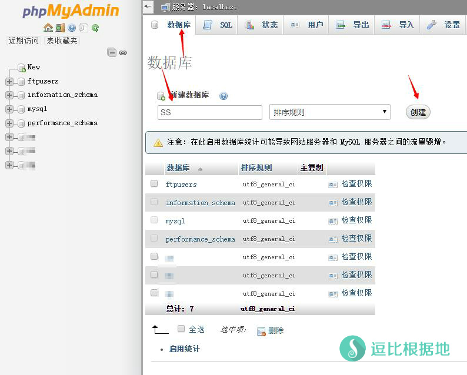
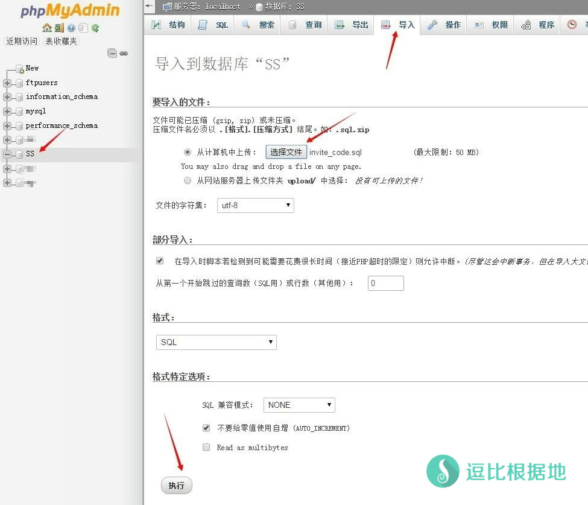
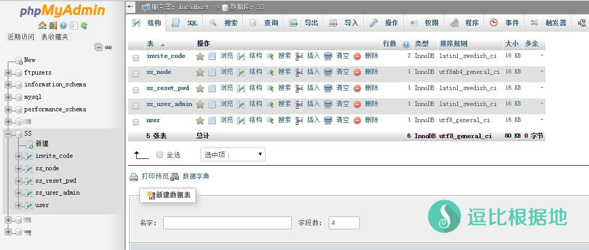
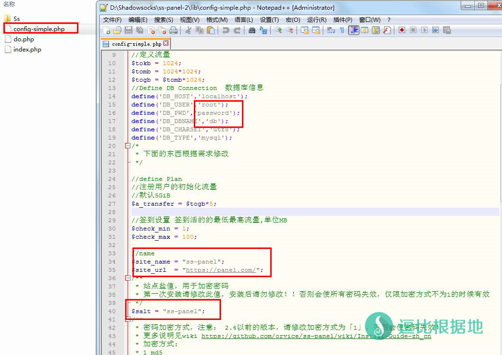
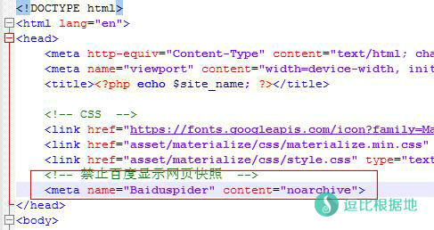
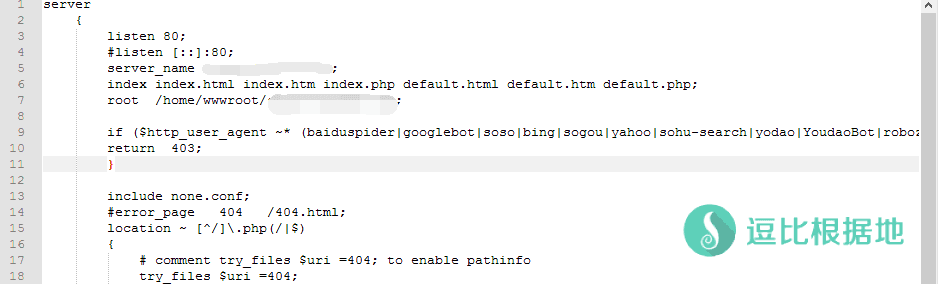
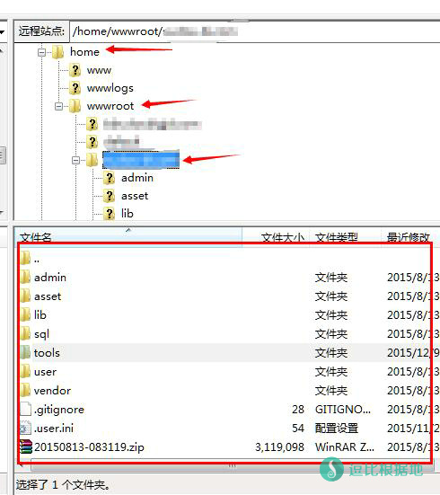

现在的Shadowsocks站非常的多，很多人看了之后也想做一个，但是苦于没有详细的教程。所以，本教程就诞生啦！！
这篇文章主要说明SS-Panel的安装教程，这属于前端教程，后端教程请看这里，新手扩展篇请看这里！（教程都是配套的，建议放在一起看！）
如果你看不太懂，那么你需要看这个：SS-Panel 前后端详细演示安装 视频教程
本教程是面向小白建站用户的，用的是效率不是最高，但是最适合小白的教程方法。请高手不要取笑。。。
本人将不再回复任何 SS Panel 问题，有问题请自行谷歌。
其他教程：SS-Panel V2 MailGun修改为SMTP发信方式教程
说明一下新手步骤，安装Web环境（LNMP/LAMP） → 创建数据库并导入SQL文件 → 修改SSPanel的config.php文件并全部上传到网站根目录 → 做一些防收录措施（可选）。
然后就没了，很简单的，不要想得太复杂。
特别注意：本教程需要一定基础的建站经验（至少建站成功过一次），否则一些地方你无法理解意义，有问题欢迎指出！而不是鄙视、贬低、辱骂教程文章和作者！
准备工作
本教程需要VPS（虚拟主机也行，不过建议使用VPS）、域名(没有的看这个：教你申请.tk/.ml/.cf/.gq/.ga等免费域名)、SS-Panel、一个逗比、还有一点建站经验（至少建过站的，务必懂一些html！）！
安装环境
PHP版本>5.4，而且需要PDO扩展。
注意：Lnmp一键包是满足所需条件的，如果是用的其他一键包或者面板请注意这两个要求！如果安装完毕，访问页面出现白屏，那就是php或者pdo版本问题。
Web环境我选的是LNMP，用的是lnmp.org军哥的一键安装包！
LNMP
因为军哥自己写的已经很详细了，所以我具体安装教程看这个吧！——传送门（注意：输入的MySQL的root密码一定要记住）
安装时间可能会几十分钟到几个小时不等，主要是机器的配置网速等原因会造成影响。安装完成之后就创建虚拟主机——传送门。
如果你没有域名，那你可以跳过创建虚拟主机步骤，直接吧sspanel上传到 /home/wwwroot/default 文件夹，把里面除了 phpmyadmin文件夹 以外的文件都删除。这个文件夹是通过IP访问的。
安装并创建完虚拟主机后，直接下一步 数据库配置
数据库配置
先下载SS-Panel面板文件：百度网盘、Github（我网盘里不一定是最新版的，可以去这个网站下载最新偶！点击Download ZIP即可下载）
然后解压并打开sql文件夹，这时候会看到五个sql文件。
然后打开网站：你的IP/phpmyadmin这时候你就在phpmyadmin上输入用户名root密码你安装LNMP时候设置的数据库root密码
进去之后点击数据库——新建数据库——创建。

然后点击左边新建的数据库，点导入，然后选择sql文件夹下的sql文件，点执行。重复五次，把五个文件都导入进去。

导入完成后就是这个样子！

网站配置
打开lib文件夹找到config-simple.php文件，打开它。
注意：用系统自带的记事本软件会出现编码问题，我推荐使用Notepad++，在编辑代码的时候很方便！）
下图中红框圈中的是必须修改的，至于初始化流量和签到流量，请自己调节！
DB_USER 是数据库用户名，DB_PWD 是数据库密码，DB_DBNAME 是数据库名称（别写错了！），这里可以使用默认的root账户也可以自己创建一个新的数据库用户。
下面的自然就是网站名字和网站域名了（必须加上http://或者https://和最后的“/”，这里请根据自己的网站是否加了ssl来选择http和https，不止一个人问我什么是https，很多人没使用SSL却还是使用默认的https，导致网站的一些链接出错误。）。
然后 $salt 这个是加密盐值，不要默认，随便填一些，只要不是默认就行。
设置完后保存一下，然后修改config-simple.php文件名为config.php。接下来就是上传文件到vps了！
特别注意：这里是新手问题高发区！config.php里面的数据库配置如果出错，可能会出现内部500错误，无法登录账号（因为没连上/连错数据库），网站白屏等错误问题！
注意！改名字这一步一定要做，否则会导致只有主页能打开，其他页面都是空白！

防止搜索引擎收录网站
这里说一下防收录的一种手段，因为SS站比较敏感，为了大家的SS站不被墙发现并封掉，推荐大家做一些防收录措施！
robots.txt文件，是屏蔽搜索引擎蜘蛛爬取网站！
Disallow: /user Disallow: /lib Disallow: /admin Disallow: /vendor User-agent: Baiduspider Disallow: / User-agent: Sosospider Disallow: / User-agent: sogou spider Disallow: / User-agent: YodaoBot Disallow: /
这里只是把百度、搜狗、有道、SOSO屏蔽了。如果有需要可以去这里生成robots内容：站长工具
然后header.php文件<head>里面加上一个防止百度收录快照的代码：
<meta name="Baiduspider" content="noarchive">

但是百度不一定遵守robots规则，可能依然收录，那就用下面的终极办法！
还有一个终极方法，如果你用的是Nginx，以lnmp为例，那就在/usr/local/nginx/conf/vhost文件夹中找到你的域名配置文件，比如：www.baidu.com.conf
然后在里面插入以下代码：
if ($http_user_agent ~* (baiduspider|googlebot|soso|bing|sogou|yahoo|sohu-search|yodao|YoudaoBot|robozilla|msnbot|MJ12bot|NHN|Twiceler)) {
return 403;
}
然后保存并上传替换，然后ssh链接vps输入lnmp nginx restart（如果提示出错请根据错误修改！）这时候去站长工具测试一下效果，看是不是返回403代码。

这几个就是我知道的所有方法了，如果有什么异议或者建议欢迎联系我！
上传网站文件
上传文件我们可以使用Linux SSH自带的SFTP，打开FTP软件（我推荐使用filezilla，功能还是很强大的！）
根据下图填写VPS信息，端口不用填，账号就是root账号。

连接后找到/home/wwwroot/你的域名，然后把SS-Panel文件都上传到这个目录下。上传完就是下图这个样子！

建立完成
这时候网站基本就创建完成了，打开你的域名开启你的网站吧！
- 你可能接着还需要看管理员面板和数据库介绍： SS-Panel教程——新手扩展篇（数据库和后台介绍）
注意：如果安装完毕，访问页面出现白屏，那就是php或者pdo版本问题。
我以后不再写任何sspanel教程，也不再回复任何sspanel问题！
其他说明
默认情况下，user表中uid为1的用户为管理员
添加管理员可以在 'ss_user_admin' 表中添加用户UID
默认管理帐号: [email protected] 密码 1993
新版密码加密方式说明
当使用新的加密方式带salt的sha256加密，由于每个站点的$salt值都不同，所以初始密码「1993」是没有用的，安装完成后，访问
你的域名/pwd.php?pwd=1993
将获得的字符串更新到数据库user表的pass字段。
如果正常安装完毕后只有主页能打开，其他页面都是空白，那就是没有修改config-simple.php文件名为config.php！
注意：
- $salt 不可随意修改！
- 如果原来为2.4之前的版本，需要将pass字段的长度修改为64
转载请超链接注明：逗比根据地 » Shadowsocks多用户管理面板——SS-Panel教程
责任声明：本站一切资源仅用作交流学习，请勿用作商业或违法行为！如造成任何后果，本站概不负责！


/home/wwwroot/xxx.xx/目录下域名当然填写IP啊，跳过创建虚拟主机步骤，意味着你使用的是 绑定IP的默认文件夹，那么你的域名就是 IP，http://1.1.1.1